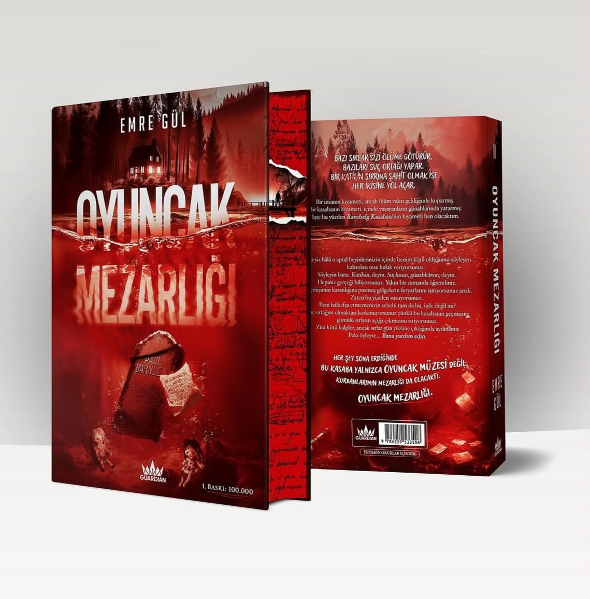

BAZI SIRLAR SİZİ ÖLÜME GÖTÜRÜR, BAZILARI SUÇ ORTAĞI YAPAR. BİR KATİLİN SIRRINA ŞAHİT OLMAK İSE HER İKİSİNE YOL AÇAR.
Bir insanın kıyameti, ancak ölüm vakti geldiğinde koparmış. Bir kasabanın kıyameti, içinde yaşayanların günahlarında yatarmış. İşte bu yüzden Ravebelg Kasabası’nın kıyameti ben olacaktım.
Ama siz hâlâ o aptal beyinlerinizin içinde benim kötü olduğumu söyleyen kahrolası sese kulak veriyorsunuz. Söyleyin bana. Katilsin, deyin. Suçlusun, günahkârsın, deyin. Hepiniz gerçeği biliyorsunuz. Yakın bir zamanda öğrendiniz. Geçmişimin karanlığına pusmuş gölgelerin feryatlarını işitiyorsunuz artık. Zaten bu yüzden susuyorsunuz. Beni hâlâ ifşa etmemenizin sebebi tam da bu, öyle değil mi? Suç ortağım olmaktan korkmuyorsunuz çünkü bu kasabanın geçmişine gömülü sırların açığa çıkmasını istiyorsunuz. Zira kötü kalpler, ancak sırlar gün yüzüne çıktığında aydınlanır. Peki öyleyse... Bana yardım edin.
HER ŞEY SONA ERDİĞİNDE BU KASABA YALNIZCA OYUNCAK MÜZESİ DEĞİL, KURBANLARIMIN MEZARLIĞI DA OLACAKTI. OYUNCAK MEZARLIĞI
Not: Yetişkin okurlar içindir.